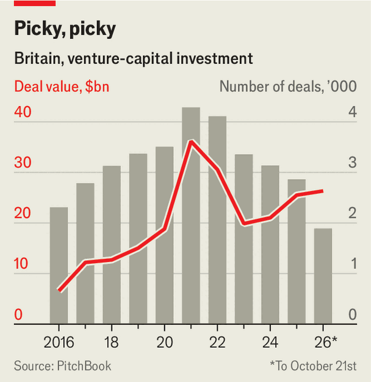

Investor seeks AI Adonis
British venture capital resembles a cruel dating game
Nov 5th 2026
FINDING A VENTURE capitalist to back your startup has never been easy. That is why Metal, a platform that helps match founders to investors, exists—and can charge $1,200 a quarter. Even so, it is a surprise to Sameer Nusrat, a manager at Metal, when on a Monday morning 100 people pack into a bougie co-working space in east London for an event he is hosting: “Is your dream vc into you?” For a growing number of founders in the capital, the answer to that question is “no”.
This year is shaping up to be a record one for venture capital in Britain. Investors, many of them American, have already poured over $26bn into startups, almost matching their splurge during the covid-19 pandemic. At the same time, artificial intelligence has made analysing startups simpler than ever, notes James Wise of Balderton Capital. Research that used to take a day can now be done in minutes. In theory, it has never been easier to find a Prince Charming in a Patagonia fleece (still the vc outfit of choice) or for him to find you.

Yet more information and money only seems to have made investors pickier. Since 2023 the total value of vc deals in Britain has risen, but their number has fallen, according to PitchBook, a data firm (see chart). In the first half of 2026 nearly three-quarters of investment went into startups working on ai, much of it to a small cohort of companies. vcs seem to have a favourite type, and they obsess about a narrow set of founders. The dating pool is becoming more exclusive.
Venture capital has always obeyed the power law: a handful of companies supply the bulk of a fund’s returns. AI is further concentrating those returns by consuming an outsize share of funding (fintech, once a darling, is struggling by contrast). A British firm may never match the returns early investors in Anthropic are likely to receive when America’s leading ai lab goes public. Indeed, on November 4th Sequoia Capital, a large vc firm, announced it would close its London office to focus on Silicon Valley. Still, thanks to its strong research base and DeepMind, Google’s ai unit, London is a good place to place smaller bets.
Founders have always mattered, but investors are now concentrating on an ever smaller group of potentially elite performers. One is David Silver, a hoodie-wearing AI pioneer and philosopher-poet who left DeepMind to co-found Ineffable Intelligence, a new frontier ai lab. On Ineffable’s website, a “note from Dave” describes Mr Silver’s vision for the company, as a place “where my precious hours can create the greatest impact”. Investors swooned. Within months he had raised $1.1bn, a British record for a seed round.
Increasingly the biggest cheques are going to impressive founders, almost regardless of the startup attached to them. Isomorphic Labs, which uses ai to try to discover new drugs, is the latest brainchild of DeepMind’s co-founder, Sir Demis Hassabis. Nscale, a data-centre provider, is led by Josh Payne, a former coal miner backed by Nvidia’s Jensen Huang and the former Meta executive Sheryl Sandberg (“The only person I’d ever seen write like that is Mark Zuckerberg,” she gushed). These ai Adonises hoover up most of the capital, just as a few hotties on Tinder get most of the right swipes.
Smaller funds, which are unable to outbid American capital for today’s stars, must find tomorrow’s as early as possible. To do so, British VCs are hosting roundtables and hanging around coffee shops. Universities are not the hotspots they used to be. A recent report by Beauhurst found that investment into spinouts raising money for the first time fell by more than two-thirds in the first half of 2026. The most exciting startups can still be founded by academics, says Jonno Evans of iq Capital, a “deeptech” outfit that focuses on the most innovative technologies. “But very often they’re not.”
The most desirable matches are those who have done all this before. Take Steven Richardson, a former detective from Merseyside. His ai startup was recently valued at $400m based on—publicly at least—a single word on a website (“INVESTIGATE”) and his track record of founding and selling Riven, an AI redaction tool. Or Chad Edwards, a 35-year-old self-avowed “craft-beer nerd” already on his second billion-dollar company. Cusp AI, which plans to use AI to discover new materials, is backed by Jeff Bezos of Amazon. Rob Lacher, who runs Visionaries, a small European fund, is particularly drawn to founders who can “turn their childhood obsession into their job” and have a gift for storytelling.
To woo their favourite founders, British vc is becoming less stingy. Liquidation preferences, the jargon for who gets paid first when a startup exits or is wound down, are now as founder-friendly in Britain as they are in America, notes Jamie Moore of Orrick, which measures these things. Venture-capital funds are paying greater attention to matters like regulatory compliance and board composition, challenging their long-held reputation for favouring growth over governance.
The most prized founders do not always welcome such advice. In a recent podcast interview, Nik Storonsky, the founder of Revolut, one of Europe’s most valuable private companies, described how a vc on its board tried to fire one of his top performers. vcs, he said scathingly, are “cheerleaders” who think they can play the match better than professional players. So deep is his disdain that Mr Storonsky started his own fund, QuantumLight, to compete with them, in much the same way Revolut seeks to disrupt banks. vcs will have to become more useful to founders, says Saul Klein of Phoenix Court, a high-performing fund. Otherwise it will be their turn to be jilted.■